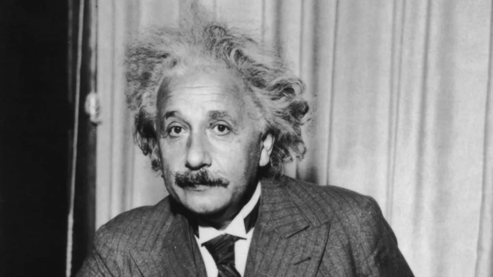

Fun Facts About Back to the Future
🚗 The DeLorean Wasn't the First Time Machine
Originally, the time machine was supposed to be a refrigerator. The filmmakers changed it to a DeLorean DMC-12 to make the vehicle more mobile and stylish—and to tie into the idea of needing to hit 88 miles per hour.
⚡ 88 Miles Per Hour Was Chosen for a Reason
The number 88 was selected because it sounds cool and looks sleek visually. Plus, it was high enough to seem futuristic, but not so fast it felt impossible.
🕰️ The Time Travel Date Is Now Iconic

October 21, 2015, is the date Marty travels to in Back to the Future Part II. When that day actually arrived in real life, fans around the world celebrated "Back to the Future Day."
🧪 Doc Brown’s Look Was Inspired by Einstein
Doc’s wild white hair and quirky personality were partly inspired by Albert Einstein and the silent film actor Harpo Marx